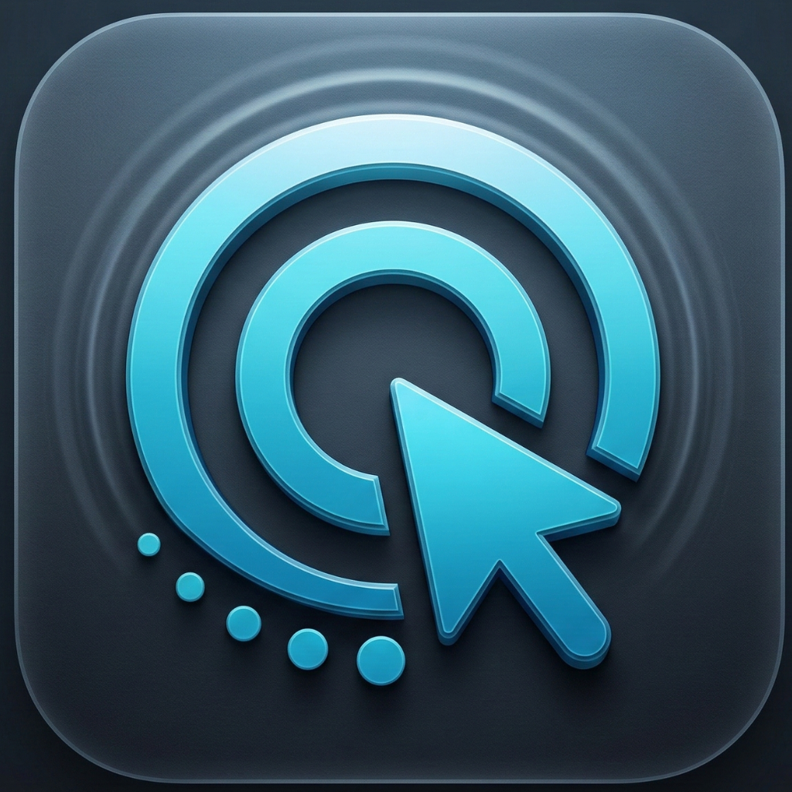

Live input counters
Track clicks, keystrokes, scrolls, CPM, WPM, active minutes, and app usage from a quiet menu bar dashboard.

ClickTrackmacOS menu bar app
Private input analytics for people who want to understand how they use their Mac.
Today
Input intelligence
Track clicks, keystrokes, scrolls, CPM, WPM, active minutes, and app usage from a quiet menu bar dashboard.
Review focus sessions, daily goals, streaks, heatmaps, hourly activity, and seven-day trends.
Turn your own activity into milestones for clicks, keys, scrolls, speed, focus, distance, and consistency.
Privacy first
For macOS 13+
The public release page is ready for signed builds, beta downloads, or an App Store link when distribution is finalized.
Download for macOS